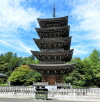

Sendai caracterizada num Mangá Sauce da Imagem : Jujutsu Kaisen
Jujutsu Kaisen, uma obra prima moderna. Qualquer connoisseur de animes e mangás terá
muito gosto
em embarcar nesta aventura
Multimédia
O clima de Sendai é considerado subtropical úmido e possui verões quentes e úmidos e
invernos frios e secos. A maioria das precipitações de Sendai ocorre no verão, mas no
inverno há
neve. A temperatura baixa média de Sendai em janeiro é de -2˚ e a alta temperatura média
de
agosto é de 28˚C.
Photo Gallery
Sendai from aboveSendai TowerSendai riverGeneral of Sendai